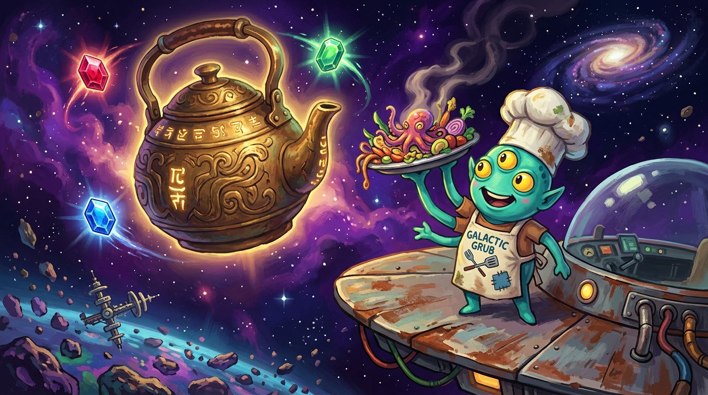
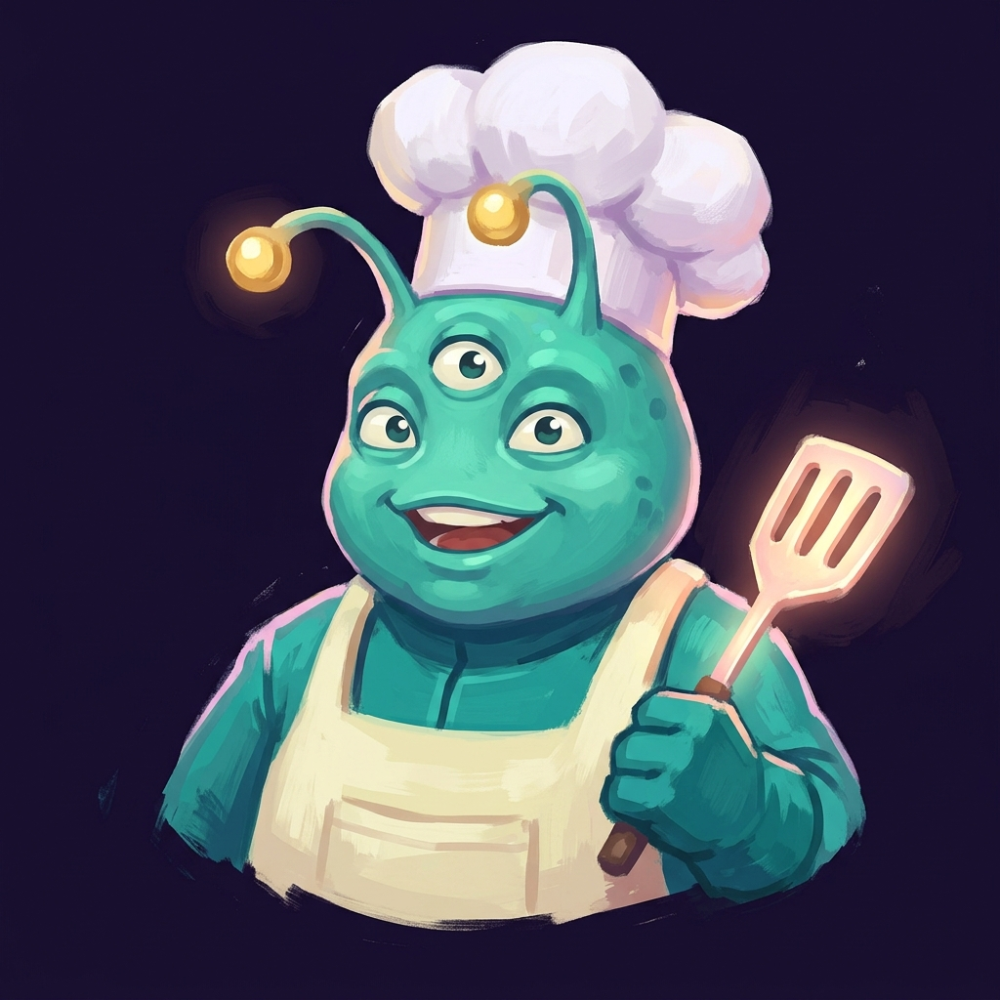
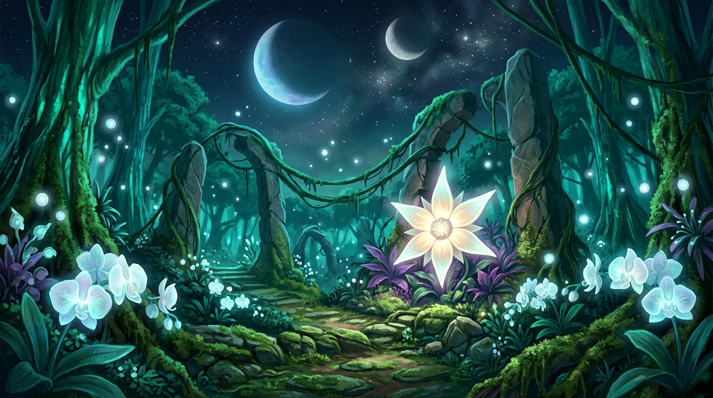
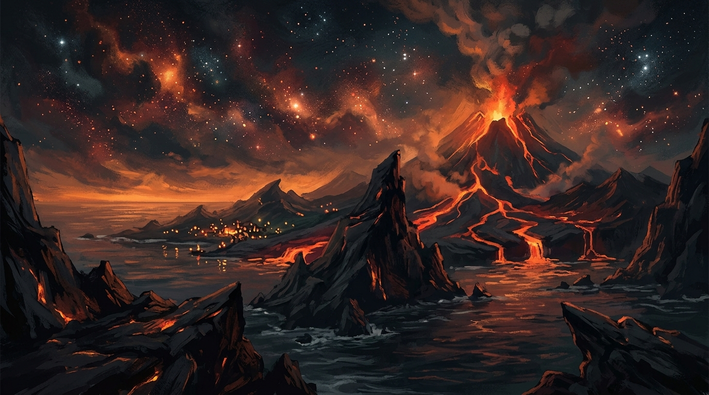
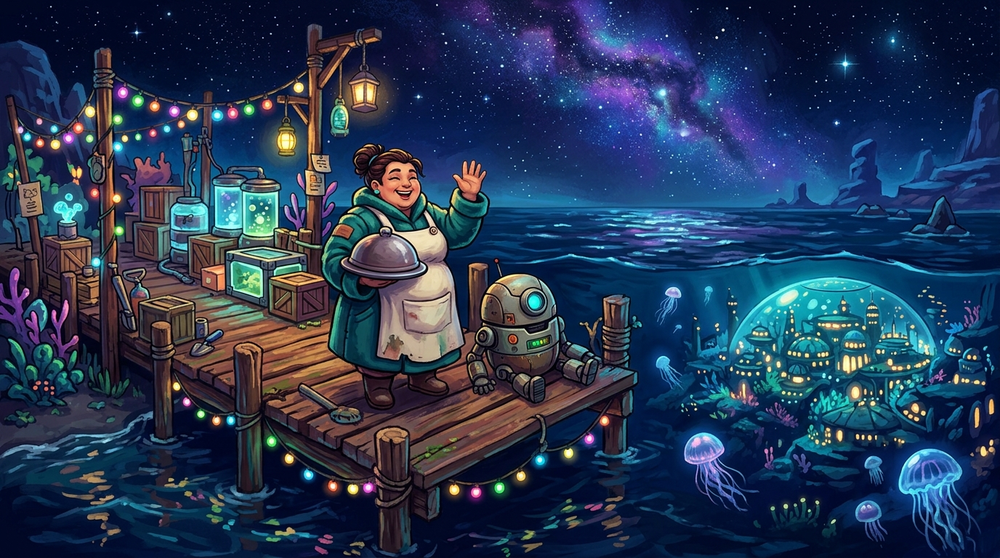
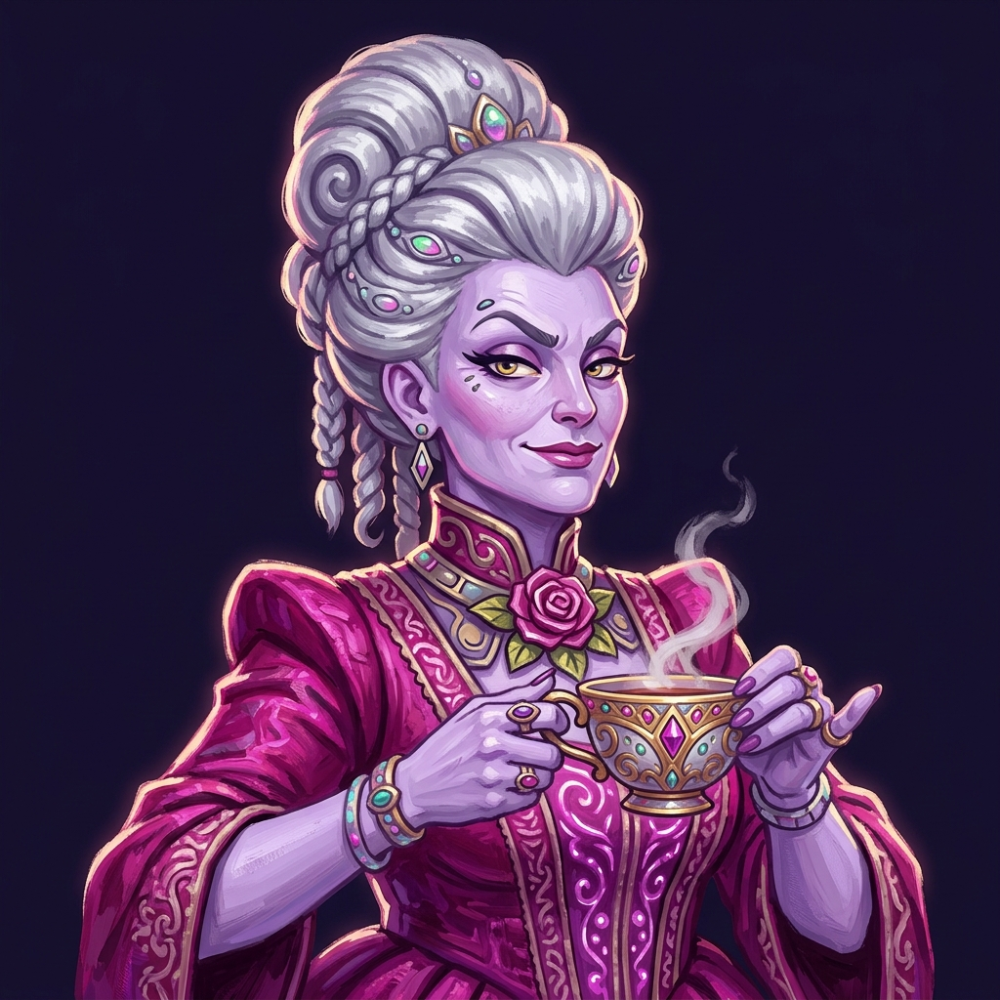
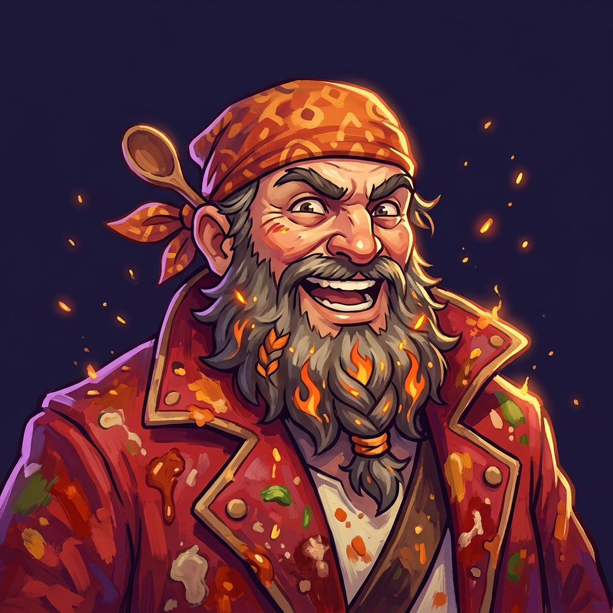
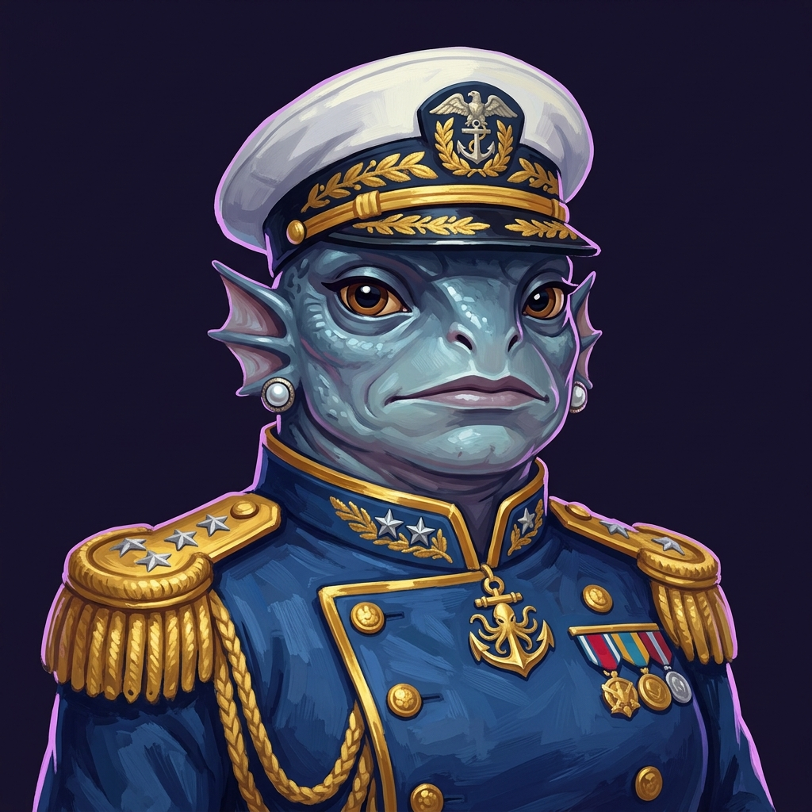
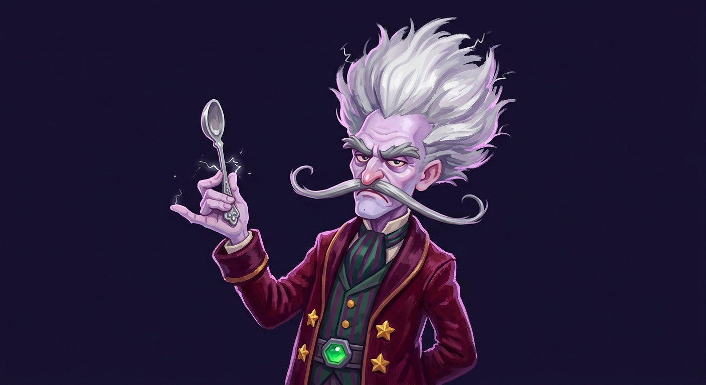

Lore · Worlds · Dossiers · Field Notes · Strategy — The Unofficial-Official Starlight Supper Fanzine

Three hundred years ago, the Great Kettle — the cosmic hearth that simmered the First Broth of the Cosmos — went cold. The stars went quiet. The broth went bland. Historians call it the Sundering. Gourmands call it the day the galaxy forgot what dinner was supposed to taste like.
Before the Sundering, the Vessari Gourmand Nomads kept the Kettle burning. It was said to flame not on wood or plasma, but on three jewels: the Hearthstone Ruby, the Abyssal Sapphire, and the Gale Emerald — one hidden on each of three worlds, each guarded by a champion of formidable manners.
When the jewels were scattered and sealed in their vaults, the Kettle cooled, and the age of flavor ended. Flavor did not die all at once. It faded — like a recipe retold too many times by people who never tasted the original.
"Grandmother said the Kettle burned on three jewels... She drew them on a napkin. We still have the napkin." — Nimbus Quill
This is where you come in. One rustbucket ship. A family of worms with strong opinions. And a napkin.

Inheritor of her grandmother's recipes, one barely-spaceworthy ship, and a wormery full of creatures who believe — correctly — that they are the smartest ones aboard. Nimbus cooks first and asks questions during. Her signature dish, the First Broth of the Cosmos, is less a recipe than an inheritance: "The Kettle remembers it."
She posts her dishes on Forklore, the galaxy's food-social network, because fame is fuel and likes are money. Twelve followers became four hundred. Four hundred became a movement. Baron Volt noticed. That was either the best or worst thing that ever happened to her.

Forests hum in major keys. Ingredient groves grow Starbloom Nectar, Glowsroom, and Cloudfruit. Home of Madame Vex, Duchess of Rust & Roses, who judges your table manners before your courage. Jewel: the Hearthstone Ruby. Travel advisory: wear better boots than you think you need.

Always too hot for soup. Emberpepper grows wild, Lavasalt is harvested from cooling flows, and Cinderfin swim happily in water that would poach them from below if they stood still. Home of Chef Bramble, the Exiled Flavor-Pirate. Jewel: the Gale Emerald.

Abysskelp forests, Pearlroot beds, and Moonroe herds on the shelf lands. The Deep Watch keeps its lamps on for sailors who'll never need them again. Home of Admiral Nell, Last Commander of Pelagia's Deep Watch. Jewel: the Abyssal Sapphire, which lies beneath HER trench, thank you very much.
The Vessari way is not conquest. Each world's champion cannot be defeated by force — only delighted. Win the duel of etiquette and they don't just yield: they join you, bringing a signature skill into every battle thereafter.

"You dare approach my garden in travel boots? Very well — we settle this the civilized way. TEA."
Delight her to 70 and she joins with Rose Parry: blocks the next enemy hit and counters for 4. She travels with you "if only to supervise." She has been supervising ever since.

"They say my lava-roux is too dangerous for polite society. Prove your palate or eat your words!"
Beat him and he declares you "diabolical" for seasoning during his monologue — the highest compliment he knows. Ally skill: Flavor Bomb, 8 damage plus a −2 attack debuff.

"The Sapphire lies beneath MY trench, gourmand. Duel me — cups, not cannons. Best etiquette wins."
Pour at perfect temperature and perfect timing and the entire Deep Watch follows you. Ally skill: Deep Cover — heal 8 and gain 3 block when things go wrong. Things go wrong.

He wears the Gale Emerald as a belt buckle. He insists it "matched nothing." When Nimbus collects all three jewels, the Baron descends personally — not to destroy her, but to review her. Permanently. His three-phase assault escalates through The Storm Course:
"A RESERVATION? For ME? You found all three jewels — now let us see if your TASTE is real!"
— opening line, Table of Baron Volt
At two-thirds health: "Impressive palate, tiny chef. But can you weather THE STORM COURSE?" At one quarter: he stops holding back his hospitality entirely. Bring allies. Bring broth. Wear pants.
Compiled from expedition logs. Threat ratings reflect both combat danger and how personally they take being cooked.
| Lifeform | Homeworld | Threat | Field Notes |
|---|---|---|---|
| 🦀 Grubble Pack | Verdanth | Low | Hunt in scuttling packs. Drop Glowsroom. More annoyed than dangerous, but there are always more of them. |
| 🍄 Angry Sporeling | Verdanth / Cinder | Low-Med | A mushroom with a grudge. Drops Cloudfruit. The anger is proportional to how close you are standing. |
| 🏴☠️ Ash Bandit | Cinder Reach / Pelagia | Medium | Volcanic highwaymen. Well-organized for someone made of cinders. |
| 🐉 Magmaw Wyrmling | Cinder Reach | Medium-High | Juvenile magma serpent. The wyrmling stage is the polite stage. |
| 🌊 Brine Fiend | Pelagia | Medium-High | Drops Abysskelp. Smells like regret pickled in ocean. |
| 🐋 Tidehulk (boss) | Pelagia | High | Guardian of the trench shelf. Drops Moonroe. The Deep Watch pretends it can control it. It cannot. |
| Dish | Ingredients | Likes | Lore |
|---|---|---|---|
| 🍮 Starbloom Foam w/ Glowsroom Dust | 2× Starbloom, 1× Glowsroom | 14 | "A dessert that hums when the spoon touches it." |
| 🥧 Cloudfruit Tart, Lavasalt Crust | Cloudfruit + Lavasalt | — | "Sweet as a rumor, sharp as a goodbye." |
| 🍤 Ember-Cured Cinderfin Ceviche | Cinderfin + Emberpepper | — | "Cooked by anger alone. Serve cold to confuse everyone." |
| 🍚 Abysskelp Risotto, Pearlroot Chip | Abysskelp + Pearlroot | — | "The deep sea's apology for everything down there." |
| 🥩 Moonroe Wellington in Starbloom Jus | Moonroe + Starbloom | — | "The dish that ended a 300-year feud on Verdanth. Twice." |
| 🍲 First Broth of the Cosmos | Moonroe + Pearlroot + Vermicelli Caviar | 90 | "Nimbus's grandmother's recipe. The Kettle remembers it." Difficulty: ★★★★★ |
"Sweet as a rumor, sharp as a goodbye" is the single greatest menu description in three galaxies. Madame Vex had it engraved above her garden gate. — Forklore reviewer ★★★★★
Nimbus's worms are not bait. They are colleagues. Bred in the Wormery Wings, each carries a trait that shapes the whole voyage:
| Worm Trait | Effect | Who Needs It |
|---|---|---|
| ✨ Shimmerback | +15% Forklore likes | Everyone. Always. Non-negotiable. |
| 🍽️ Gourmand Grub | +1 luxury ingredient per day | Chefs chasing the First Broth |
| 🔮 Oracle Worm | Reveals map nodes at night | Expedition planners (see the Oracle Worm himself) |
| 🧠 Philosopher Worm | +2 max HP each dawn | Anyone meeting Baron Volt on purpose |
Vermicelli Caviar — wormgold, value 20 — is the only luxury ingredient that grows nowhere. It is produced exclusively by worms who know exactly how valuable they are. Rarity tiers run Common → Rare → beyond; breed carefully and speak respectfully.
"The plan, then: by day, cook gourmet dishes and post them on Forklore for money. By ⚡energy, expedition to each world." — The Oracle Worm, adjusting a tiny monocle
"Wear pants." — The Oracle Worm, closing the briefing